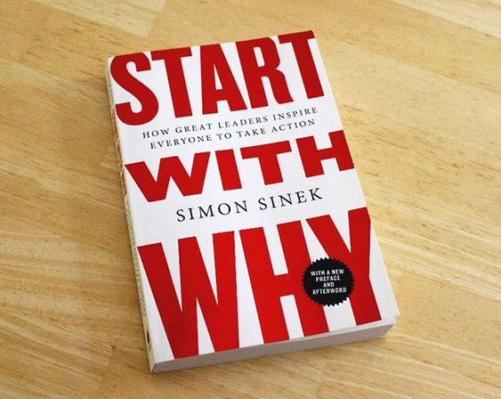
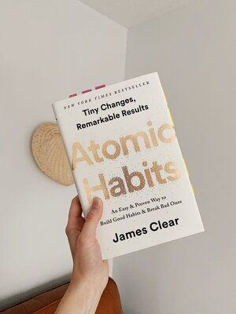
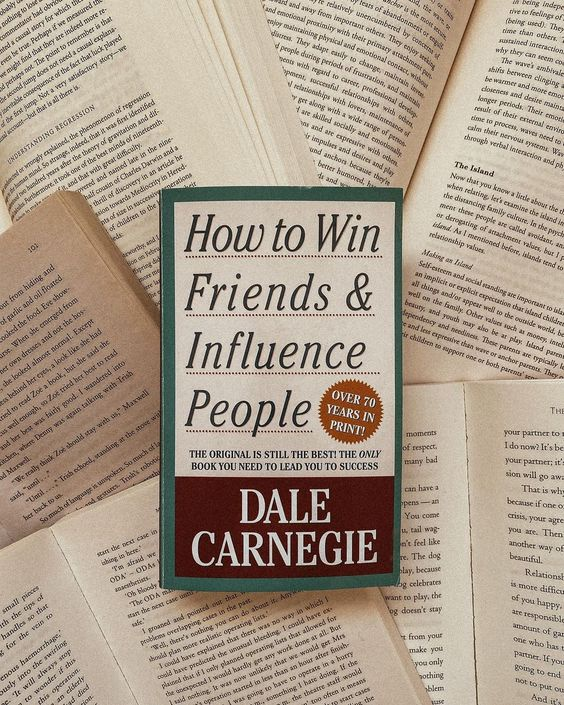

Pecinta Buku Wajib Baca Buku Self Improvement Ini!
1. Start With Why - Simon Sinek
Buku ini menjadi salah satu buku best seller favorit saya. Buku ini membahas tentang pemahaman yang paling dasar yang kamu butuhkan untuk memulai sesuatu.Dalam buku ada penjelasan tentang "Lingkaran Emas". Apa yang dimaksud lingkaran emas? Ada tiga lapisan pada lingkaran tersebut yaitu lapisan paling dalam yaitu Why, lapisan ke dua yaitu How, dan lapisan terluar yaitu What. Sebagian besar dari kita banyak memulai sesuatu dimulai dari lingkaran terluar yaitu What.
Contohnya:
Kamu mungkin pernah tiba tiba kepikiran dan berkeinginan untuk membuka bisnis baru. Saya yakin, yang pertama kali terlintas dalam pikiranmu pasti "Bisnis apa ya?". Padahal yang seharusnya kamu pikirkan dan tanyakan kepada diri kamu sendiri sebelum memulai bisnis adalah dimulai dari lingkaran terdalam yaitu Why.Alasannya adalah ketika kamu memulai pertanyaan itu dengan why, "kenapa saya harus memulai bisnis?". Misalkan jawabannya adalah agar punya tambahan penghasilan untuk meringankan beban orang tua. Hal itu akan sekaligus menjadi tujuan utama kamu kenapa kamu memulai bisnis. Ketika kamu sudah menemukan why.nya, baru bisa kamu lanjutkan ke how kemudian what. Alasan lainnya adalah ketika kamu bsia menemukan why yang jelas, ketika ada rasa ingin menyerah, kamu bisa mengingat kembali alasan awal kenapa kamu memulai bisnis tersebut. Sehingga perasaan ingin menyerah tersebut bisa segera teratasi.
2.Atomic Habits - James Clear
Buku ini membahas tentang memulai kebiasaan baik setiap hari bahkan dari hal hal bersifat atom (itulah kenapa buku ini berjudul atomic). Sedikit tentang buku ini yang saya masih ingat adalah tentang bagaimana mempermudah kebiasaan baik bisa terus berlangsung dengan dimulai dari hal hal kecil setiap hari dan juga menghindarkan kebiasaan buruh dengan mempersulit kebiasaan-kebiasaan itu bisa terjadi.
Contohnya :
Ketika kamu ingin memulai kebiasaan untuk membaca, permudah dirimu untuk menemukan dan melihat buku itu setiap hari. Caranya bisa dengan menempatkan buku tersebut di tempat-tempat yang mudah kamu lihat atau tempat favoritmu. Selain itu, untuk mempersulit atau menghambat kebiasaan kurang baik terjadi misalnya kebiasaan menonton TV atau terlalu banyak menggunakan media sosial. Bisa kamu siasati dengan cara menyembunyikan remote TV, mencabut kabel TV setelah menonton dan juga menggunakan password di setiap media sosial yang ada di ponselmu. Cara itu merupakan hal yang sepele namun jika kamu lakukan setiap hari akan menumbuhkan kebiasaan baik baru di hidupmu.
Masih banyak lagi cara" menarik yang dibahas di buku atomic habits tentang memulai kebiasaan baik dari hal hal kecil dan sederhana.
3.How To Win Friends and Influenze People - Dale Carnegie
Buku ini baru saja selesai saya baca beberapa hari sebelum saya menulis ini. Buku ini cocok buat kamu jika kamu ingin belajar bagaimana cara berkomunikasi dan membangun hubungan baik dengan orang lain. Dalam buku ini dijelaskan poin-poin yang bisa kamu lakukan jika ingin membangun komunikasi yang baik meskipun dengan orang baru. Sesimple melempar senyum, menyebut nama, dan menunjukkan minat pada orang yang kamu temui tersebut.
Beberapa Bab yang dibahas di buku ini diantaranya :
- Yang perlu dilakukan dalam keterlibatan
- Enak cara untuk memberikan kesan yang bertahan lama
- Cara mendapatkan dan menjaga kepercayaan orang lain
- Cara menuntun perubahan tanpa penolakan dan kebencian
4 bagian diatas membahas cukup dalam tentang apa saja yang bisa kamu lakukan untuk bisa berhubungan baik dengan orang lain. Tidak hanya itu, 2 bagian terakhir juga menjelaskan tentang kepemimpinan. Komunikasi seperti apa yang efektif digunakan seorang pemimpin dalam menjaga hubungan dan memimpin timnya. Sejatinya, setiap buku yang kamu baca sudah bisa dikatakan sebagai salah satu langkah pengembangan diri. Karena dengan membaca, apapun jenisnya (yang memiliki manfaat) akan memberikan pengetahuan dan pandangan baru tentang hal yang mungkin sebelumnya sama sekali tidak kamu ketahui.
2.Atomic Habits - James Clear
Buku ini membahas tentang memulai kebiasaan baik setiap hari bahkan dari hal hal bersifat atom (itulah kenapa buku ini berjudul atomic). Sedikit tentang buku ini yang saya masih ingat adalah tentang bagaimana mempermudah kebiasaan baik bisa terus berlangsung dengan dimulai dari hal hal kecil setiap hari dan juga menghindarkan kebiasaan buruh dengan mempersulit kebiasaan-kebiasaan itu bisa terjadi.
Contohnya :
Ketika kamu ingin memulai kebiasaan untuk membaca, permudah dirimu untuk menemukan dan melihat buku itu setiap hari. Caranya bisa dengan menempatkan buku tersebut di tempat-tempat yang mudah kamu lihat atau tempat favoritmu. Selain itu, untuk mempersulit atau menghambat kebiasaan kurang baik terjadi misalnya kebiasaan menonton TV atau terlalu banyak menggunakan media sosial. Bisa kamu siasati dengan cara menyembunyikan remote TV, mencabut kabel TV setelah menonton dan juga menggunakan password di setiap media sosial yang ada di ponselmu. Cara itu merupakan hal yang sepele namun jika kamu lakukan setiap hari akan menumbuhkan kebiasaan baik baru di hidupmu.
Masih banyak lagi cara" menarik yang dibahas di buku atomic habits tentang memulai kebiasaan baik dari hal hal kecil dan sederhana.
3.How To Win Friends and Influenze People - Dale Carnegie
Buku ini baru saja selesai saya baca beberapa hari sebelum saya menulis ini. Buku ini cocok buat kamu jika kamu ingin belajar bagaimana cara berkomunikasi dan membangun hubungan baik dengan orang lain. Dalam buku ini dijelaskan poin-poin yang bisa kamu lakukan jika ingin membangun komunikasi yang baik meskipun dengan orang baru. Sesimple melempar senyum, menyebut nama, dan menunjukkan minat pada orang yang kamu temui tersebut.
Beberapa Bab yang dibahas di buku ini diantaranya :
- Yang perlu dilakukan dalam keterlibatan
- Enak cara untuk memberikan kesan yang bertahan lama
- Cara mendapatkan dan menjaga kepercayaan orang lain
- Cara menuntun perubahan tanpa penolakan dan kebencian
4 bagian diatas membahas cukup dalam tentang apa saja yang bisa kamu lakukan untuk bisa berhubungan baik dengan orang lain. Tidak hanya itu, 2 bagian terakhir juga menjelaskan tentang kepemimpinan. Komunikasi seperti apa yang efektif digunakan seorang pemimpin dalam menjaga hubungan dan memimpin timnya. Sejatinya, setiap buku yang kamu baca sudah bisa dikatakan sebagai salah satu langkah pengembangan diri. Karena dengan membaca, apapun jenisnya (yang memiliki manfaat) akan memberikan pengetahuan dan pandangan baru tentang hal yang mungkin sebelumnya sama sekali tidak kamu ketahui.